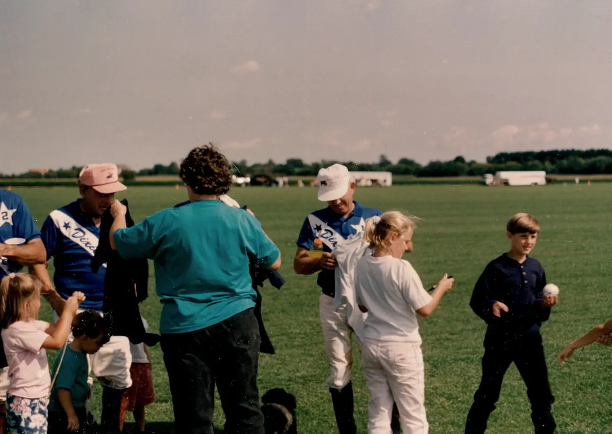
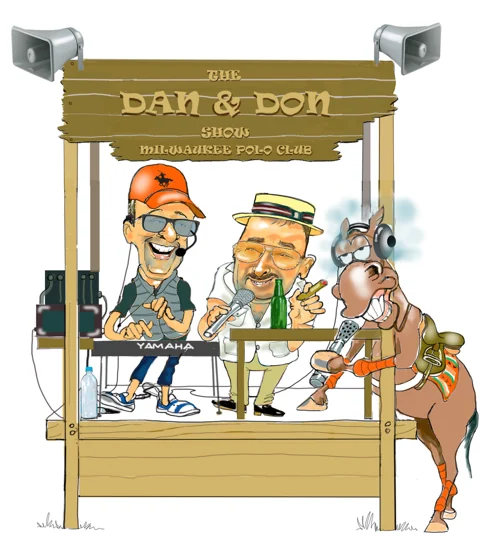
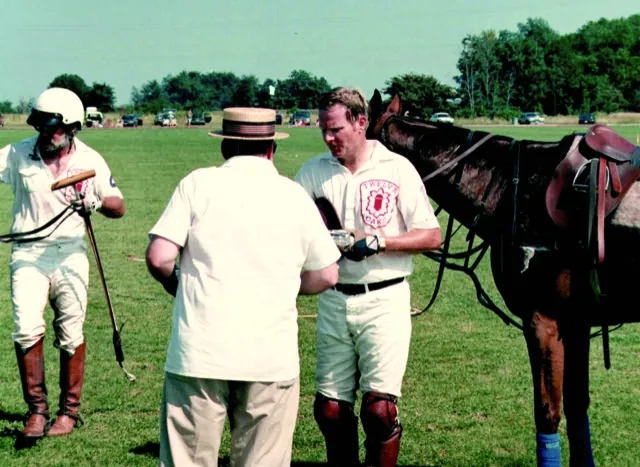
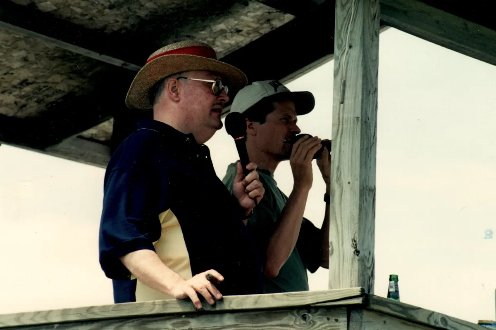

About Don
Don Lubner, the colour man in the polo announcer’s booth
Don Lubner came to polo on a date. Around 1978, his future wife Mary took him to a match at the old Uihlein Field in Milwaukee, and he never really left.

When the Milwaukee Polo Club moved to Hartland in the 1990s, Don joined Dan Dance in the announcer’s booth as the colour man: the one who fills the gaps between the play-by-play with the history, the anecdotes and the explanation of what just happened. He went on to announce dozens of matches, in Milwaukee and around the world, including the Kauai Polo Club in Hawaii and the Durbanville Polo Club in South Africa. He was nominated for the Polo Hall of Fame.
Away from the field he taught law at Milwaukee Area Technical College, travelled widely and made a serious study of life’s finer pleasures: cigars, cognac, wine, food and family.
How to Talk Polo is his commentary, written down for every fan who ever turned to the person next to them and asked what just happened.


Why this site exists
Don was a polo aficionado for over 30 years. I’ve carried forward his legacy by updating and publishing his original book, ‘How To Talk Polo: A Fan’s View’, originally written in 2000 for the Milwaukee Polo Club. The HowToTalkPolo brand promotes the sport of horse polo through book sales, licensed merchandise, and affiliate sales that align with the theme of polo and the equestrian lifestyle.
The book’s credits
- Author
- Don Lubner
- Editor
- Charles Lubner
- Foreword
- Dan Dance, announcer, Milwaukee Polo Club
- Illustrations
- Steve Slaske and Dan Dance, used with permission
- Publisher
- Scheunemann Bros. Publishing Co., 2018
Don at the club



Photographs by Mary Lubner, 1990s.